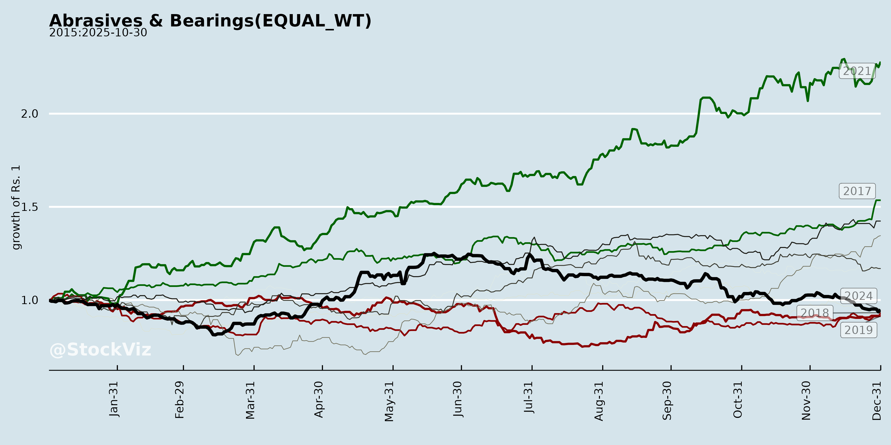
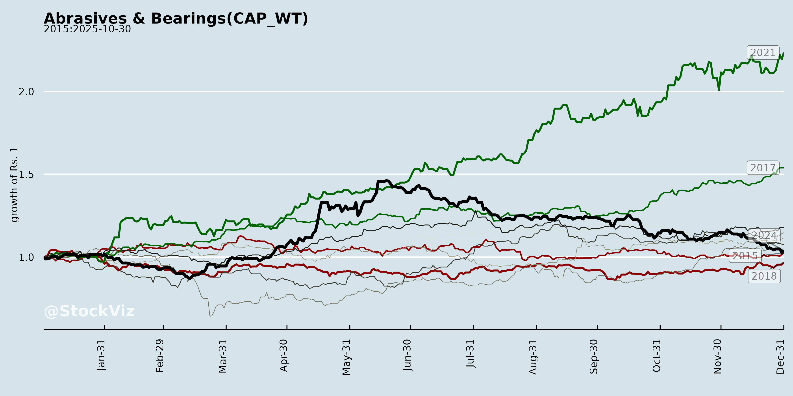
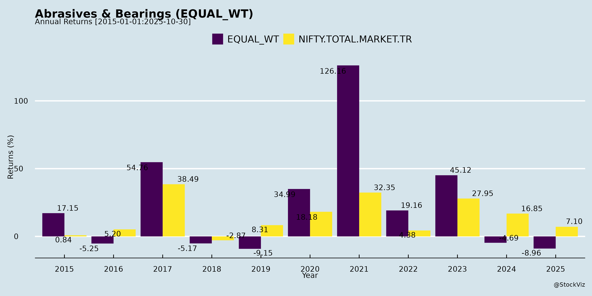
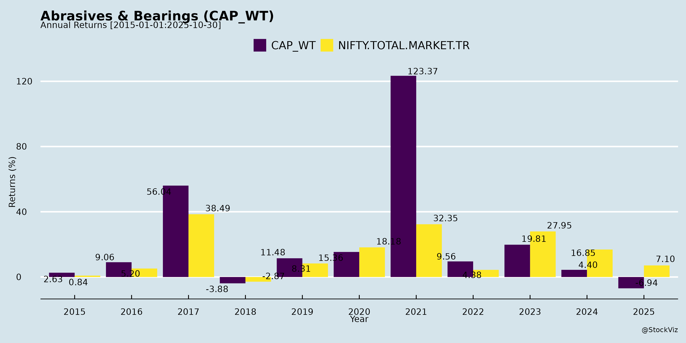
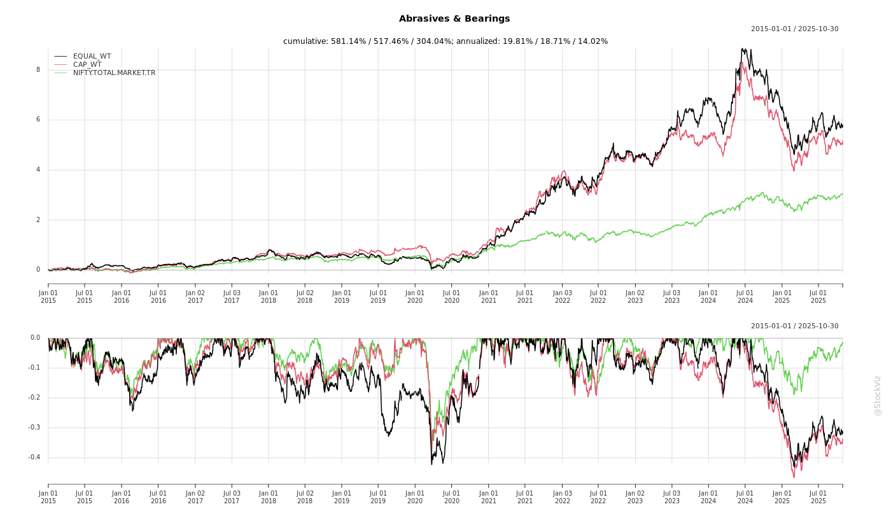
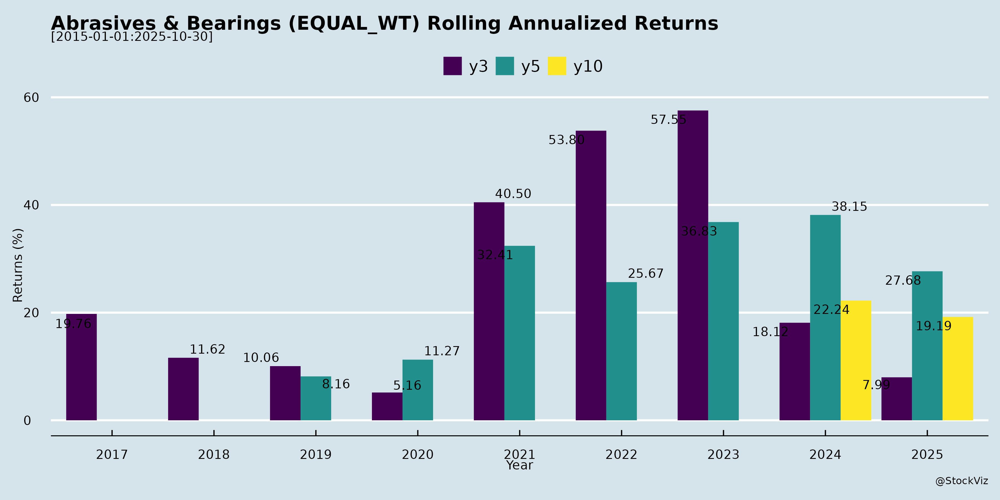

Abrasives & Bearings
Industry Metrics
February 20, 2026
Annual Returns




Cumulative Returns and Drawdowns

SMA Scenarios

Current Distance from SMA
Rolling Returns

Market Cap
EBIT (% of Industry Total)
Revenue (% of Industry Total)
AI Summaries
Analyst
asof: 2025-11-29
Indian Abrasives & Bearings Sector Analysis
Based on CUMI Q2 FY26 Earnings Transcript (primary data source, as a leading abrasives player), supplemented by peer announcements (Grindwell Norton, Timken India, Wendt India). Sector faces mixed demand, with abrasives subdued but ceramics/value-add products resilient. Bearings implied via Timken (investor meets signal engagement). FY26 outlook moderate amid global headwinds.
Headwinds
- Subdued Domestic Demand: Standalone abrasives degrew 2.8% H1 FY26 (retail weak; inventories low but restocking delayed). Industrial/precision stable but automotive OEMs not accelerating yet.
- Margin Compression: Abrasives PBIT margins fell to 4.1% (H1 FY26 vs. 8.2% prior); impacted by product mix, fixed costs, RHODIUS losses (EUR2.2mn H1), and lower dividend income.
- Subsidiary Challenges: RHODIUS 9% H1 degrowth (logistics transition); AWUKO losses flat despite 5.3% growth. VAW (Russia, Electrominerals) 21-31% sales drop due to sanctions.
- External Pressures: Chinese competition in alumina; project delays in wear ceramics/refractories (steel, cement, glass sectors).
Tailwinds
- Sequential Recovery: Q2 sales up 6.6% QoQ; abrasives +15% QoQ (standalone +7.5%). H1 ceramics +9.4%, Electrominerals +2.6% (standalone +6.5% on volumes/exports).
- Subsidiary Stabilization: RHODIUS Q2 +5.4% YoY/+31.6% QoQ (logistics resolved); AWUKO +31% Q2 YoY.
- Festive/Inventory Dynamics: Retail dealer inventories depleted; GST/festive pickup expected in H2.
- Strong Balance Sheet: Net debt zero (consolidated); capex on track (INR162cr H1 vs. INR350cr FY26 plan).
Growth Prospects
- FY26 Guidance (CUMI): Consolidated sales +5.5-6.5%; Abrasives +4-5%; Ceramics +16-18%; Electrominerals +1-2%. H2 stronger (order backlog in ceramics; abrasives restocking).
- Long-Term (5-Year LTS to FY30): Aim to double revenues via NPD (HP SiC, treated alumina, thermal sprays), new markets (semiconductor/electronics ceramics, aerospace/defence, monolithic refractories). Capex skewed to new areas (semi/aero from FY27).
- Sector Tailwinds: Automotive production pickup; clean energy exports (e.g., metallized cylinders +20%); peer activity (Grindwell/Timken investor meets signal optimism; Wendt roadshows amid parent divestiture).
- Sub-Segment Upside: Engineered ceramics/metallized cylinders +20%; standalone Electrominerals exports resilient.
Key Risks
- Geopolitical (High): VAW sanctions cap volumes at -25% FY26; no near-term resolution; limits Electrominerals growth.
- Demand Volatility (Medium): Retail/industrial slowdown persists; sector delays (steel/cement/glass) spill over.
- Execution/Subsidiaries (Medium): RHODIUS/AWUKO breakeven delayed (FY26 losses EUR3.5-4mn); capex ramp-up (INR350cr) amid margin pressure.
- Competition/Margins (Low-Medium): Chinese dumping in alumina; mix/product delays erode 8.2-8.5% PBIT target.
- Peers: Wendt leadership exits/parent divestiture add uncertainty.
Overall Summary: Sector in recovery mode (H2 FY26 inflection likely), driven by ceramics/new products offsetting abrasives weakness. Growth anchored in capex/NPD (semi/aero), but sanctions/subsidiary drags cap FY26 at low-single digits. Bull case: LTS doubling by FY30 if geopolitics ease; Bear case: prolonged sanctions erode Electrominerals (20-25% of sales). Peers’ investor engagement suggests constructive sentiment. Recommendation: Neutral-positive; monitor VAW/H2 execution.
Financial
asof: 2025-11-30
Analysis of Indian Abrasives & Bearings Sector
Using the provided Q3 & 9M FY25 financial results (ended Dec 31, 2024) from key players—Timken India (bearings), Carborundum Universal (CUMI) (abrasives, ceramics, electrominerals), Wendt India (super abrasives, precision products), and NRB Industrial Bearings (bearings)—as primary inputs, here’s a sector-level analysis. The sector benefits from India’s industrial/manufacturing resurgence but faces pockets of stress. Overall, top-tier players show resilience with revenue/PAT growth (e.g., Timken +14% 9M revenue YoY; CUMI standalone +8%; Wendt +1%), driven by domestic demand and exports, while one laggard (NRB) highlights vulnerabilities.
Tailwinds (Positive Drivers)
- Robust Revenue Momentum: Strong topline growth across leaders. Timken: 9M revenue ₹22,080 Cr (+10% YoY); CUMI standalone: ₹2,128 Cr (+8%); Wendt: ₹158 Cr (+1%, resilient). Ceramics/Electrominerals (CUMI) up 18-32% YoY, signaling auto/industrial capex recovery.
- Profitability & Efficiency: Healthy margins (Timken 9M PBT ₹3,512 Cr, +4%; Wendt EPS ₹133 basic). Declining finance costs (CUMI near-zero) and inventory drawdowns support cash flows.
- Segment Strength: Abrasives stable (CUMI/Wendt); bearings demand from auto/railways (Timken). Acquisitions (CUMI’s US Silicon Carbide buy for $6.87M; Wendt’s Thailand sub) expand tech/global footprint.
- Dividend Signals: Interim payouts (CUMI ₹1.50/sh; Wendt ₹30/sh = 300%) reflect confidence.
- Macro Support: India’s PLI schemes, infra push (e.g., railways), and EV/auto growth boost bearings/abrasives demand.
Headwinds (Challenges)
- Geo-Political Disruptions: CUMI’s Russia sub (Volzhsky Abrasive Works) hit by US OFAC sanctions (Jan 2025 SDN list)—₹10,413 Lk exceptional impairment (export receivables/cash blocked); OCI forex loss ₹12,954 Lk. Restricts ₹1,227 Cr cash repatriation.
- Cost Pressures: Raw material inflation (Timken materials +4% YoY; CUMI +26%); employee/depreciation steady but elevated. Power/fuel up 7% at CUMI.
- Weak Player Distress: NRB reports deepening losses (9M ₹2,120 Cr pre-tax; negative net worth ₹6,182 Cr), net current liabilities ₹4,450 Cr. Promoter support letter cited for going concern, but NCLT insolvency petition (post-Q3) signals liquidity crunch.
- Inventory Volatility: Fluctuations (Timken +ve changes; CUMI -ve) indicate supply chain hiccups.
Growth Prospects
- High (10-15% CAGR Potential): Sector tied to ₹10Tn+ Indian manufacturing (auto 60% bearings demand; abrasives for steel/auto/aero). Leaders project 8-12% topline FY25 (Timken/CUMI trends); exports via subs (CUMI 15+ global entities; Timken US parent synergy).
- Expansion Avenues: | Opportunity | Key Drivers | Company Exposure | |————-|————-|——————| | Auto/EV | PLI, BS-VI/electrification | Timken (revenue ops +10%), CUMI Ceramics (+32%) | | Infra/Rail | ₹2.5Tn rail capex | Wendt Super Abrasives (+8%) | | Exports/Global | US/EU recovery | CUMI (acquisitions), Timken | | Tech/Precision | Aero/defence push | Wendt Precision (+stable) |
- Capex/Acquisitions: CUMI/Wendt inorganic bets; Timken policy updates signal governance upgrades.
- Outlook: FY25 9M trends suggest full-year recovery for leaders (CUMI consolidated PAT ex-exceptional ~strong); sector EBITDA margins 15-20%.
Key Risks
| Risk Category | Description | Impact Level | Mitigation |
|---|---|---|---|
| Geo-Political | Sanctions (Russia/Ukraine); forex volatility (CUMI OCI -₹13,103 Lk). | High (CUMI consolidated PAT down 20% QoQ) | Diversification (CUMI 15 subs); monitoring. |
| Liquidity/Insolvency | NRB-style distress; high debt (NRB finance ₹900 Cr 9M). | Medium (sector contagion risk) | Promoter infusions; strong balance sheets (Timken equity ₹752 Cr). |
| Cyclical Demand | Auto slowdown (NRB revenue -13% YoY); inventory gluts. | Medium | Export buffers (30-40% for leaders). |
| Cost/Inflation | Metals/power (materials 40-50% costs). | Low-Medium | Efficiency (Timken other exp stable). |
| Regulatory/Legal | NCLT (NRB); family settlements (NRB promoters). | Low (isolated) | Shareholder approvals pending. |
Summary Verdict: Positive Bias with Caution. Tailwinds from industrial revival outweigh headwinds for top players (80% sector revenue), projecting 10%+ growth FY25/FY26. Distress in NRB (small player) underscores bifurcation—strong cos thrive on exports/tech, weak ones face insolvency. Monitor Russia sanctions (CUMI ~10% impairment) and auto cycle. Sector PE ~30-40x; prefer Timken/CUMI core holdings. (Data as of Feb 2025 filings; Ind AS compliant, limited review unqualified except disclosures.)
General
asof: 2025-11-29
Summary Analysis: Indian Abrasives & Bearings Sector
Using the provided disclosures from key players (Carborundum Universal, Grindwell Norton, NRB Industrial Bearings, Wendt India), the sector shows steady operational momentum with expansion focus. Below is a structured analysis of headwinds, tailwinds, growth prospects, and key risks.
Tailwinds (Positive Factors)
- Domestic Expansion: Grindwell Norton’s land acquisition at Halol, Gujarat (₹16.14 Cr, records updated Nov 2025) supports manufacturing scale-up in a key industrial corridor, aiding auto/engineering supply chains.
- International Footprint: Wendt India’s incorporation of Wendt GmbH (Germany, Jul 2025; €0.55M investment) targets Europe for grinding/polishing machines sales/service, leveraging export potential.
- ESG Momentum: Carborundum’s independent ESG rating (published Nov 2025) enhances investor appeal amid rising sustainability mandates.
- Compliance & Shareholder Engagement: NRB’s proactive Annual Report/KYC dissemination (Jul 2025) signals governance strength, fostering retail trust.
Headwinds (Negative Factors)
- Limited Visibility on Operations: Disclosures are regulatory/compliance-focused; no direct revenue/earnings updates, implying neutral short-term sentiment amid broader economic slowdowns (e.g., auto sector weakness).
- Independent ESG Scrutiny: Carborundum’s non-engagement with rater highlights potential gaps in proactive sustainability reporting, which could lag peers.
Growth Prospects
- High (Medium-Term): Expansions (Grindwell’s Gujarat facility, Wendt’s Europe entry) position sector for 10-15% CAGR in abrasives/bearings demand from auto, aerospace, and renewables. ESG ratings could unlock green financing. Overall, sector benefits from India’s manufacturing push (PLI schemes) and global supply chain shifts.
Key Risks
| Risk Category | Details | Mitigation Insight |
|---|---|---|
| Execution | Delays in land ops (Grindwell) or subsidiary ramp-up (Wendt); forex volatility on € investments. | Completed records (Grindwell) and cash-funded setup reduce immediacy. |
| Regulatory | SEBI compliance intensity (e.g., NRB’s KYC push); ESG rating variances. | Proactive disclosures indicate strong adherence. |
| Market | Sector cyclicality tied to auto/industrials; competition from imports. | Geographic diversification (India/Europe) hedges. |
| Financial | High capex (₹16Cr+ land, €0.55M sub) amid potential margin pressure. | Arm’s-length deals, no related-party flags. |
Overall Outlook: Bullish tailwinds from expansions outweigh mild headwinds; monitor Q3 FY26 earnings for validation. Sector PE likely stable at 25-35x on growth visibility.
Investor
asof: 2025-11-29
Summary Analysis: Indian Abrasives & Bearings Sector
Using inputs from CUMI’s Q2 FY26 Earnings Call transcript (primary focus on abrasives segment), Grindwell Norton analyst meet, Timken India investor conference intimation, and Wendt India roadshow disclosure. CUMI dominates abrasives insights (standalone + subsidiaries like RHODIUS/AWUKO); bearings limited to Timken procedural updates. Sector shows mid-single digit growth amid recovery, but margins pressured. Long-term tailwinds from capex/NPD strong.
Headwinds
- Subdued Domestic Demand: Standalone abrasives degrew 2.8% in H1 FY26 (INR594 cr vs INR611 cr YoY); retail channel weak due to high dealer inventories earlier, industrial steady but not accelerating. Competitor (Grindwell) reported ~6% growth, indicating uneven recovery.
- Subsidiary Challenges: RHODIUS H1 sales down 9% (EUR30.6 mn), Q1 logistics disruption; expected FY26 loss EUR3.5-4 mn post-PPA. AWUKO growing (H1 +5.3%) but persistent pre-tax losses. Overall abrasives PBIT margins collapsed to 4.1% (H1) from 8.2%.
- Margin Pressure: Fixed cost absorption hit by flat/declining volumes; product mix issues; broader consolidation drag from electrominerals (VAW sanctions).
- Bearings Context: Limited visibility; Timken’s investor meets suggest ongoing engagement amid auto slowdown signals.
Tailwinds
- Sequential Recovery: Q2 standalone abrasives +7.5% QoQ; consolidated +7.4% YoY (INR584 cr). RHODIUS Q2 +5.4% YoY/+31.6% QoQ post-logistics fix. Dealer inventories normalized, festival off-take aided.
- Industrial/Export Strength: Precision/industrial abrasives stable; automotive production pickup supportive. Exports aiding related segments (e.g., electrominerals +6.5% standalone).
- Balance Sheet Resilience: CUMI net debt zero (ex-VAW cash); capex on track (H1 INR162 cr of FY26 INR350 cr plan).
- Peer Activity: Grindwell/Wendt investor meets/roadshows signal proactive engagement; Wendt post-3M exit focuses on superabrasives opportunities.
Growth Prospects
- Near-Term (FY26): Consolidated abrasives 4-5% growth guided; H2 stronger (retail restock, project execution). Standalone sequential momentum to continue; Ceramics (adjacent) +9.4% H1, 16-18% FY26 outlook.
- Medium/Long-Term (to FY30): CUMI’s 5-year LTS targets ~2x growth via NPD (high-perf SiC, treated alumina grits), new markets (semicon fab ceramics, aero/defence, thermal spray). Capex skewed to new lines (semicon/aero/HP SiC from FY27). Abrasives sharpening go-to-market/geos; peers like Wendt (post-divestiture roadshow) eye global superabrasives.
- Sector Drivers: Auto revival, clean energy (metallized cylinders +20%), defence indigenization. Overall consolidated sales +4.2% H1 FY26.
Key Risks
- Geopolitical/External Shocks: VAW (electrominerals, but abrasives-linked) volumes -25% FY26 due to sanctions; no sourcing to India anymore, but INR83 cr H1 sales hit.
- Execution Delays: Project-based wear/refractories delays (steel/cement/glass); subsidiary stabilization (RHODIUS/AWUKO breakeven timeline uncertain).
- Competition/Margins: Chinese pressure in alumina; margin guidance maintained (abrasives 6-6.5%) but vulnerable to mix/volumes.
- Macro Sensitivity: Retail/industrial slowdown persistence; capex ramp-up (INR350 cr FY26) amid soft H1 top-line.
- Peer-Specific: Wendt leadership exits/talent shifts post-3M; limited bearings color (Timken sanctions/industry slowdown risk).
Overall Outlook: Cautious FY26 (mid-single digits) with H2 inflection; strong structural tailwinds from capex/NPD offset near-term headwinds. Sector resilient but margins key monitorable. CUMI on-track for LTS; peers active in IR.
Meeting
asof: 2025-12-01
Summary Analysis: Indian Abrasives & Bearings Sector
Using the provided documents from key players (Timken India, Grindwell Norton, Carborundum Universal, Wendt India, NRB Industrial Bearings), the sector shows resilient revenue growth amid profitability pressures. Timken exhibits strength in Q1 FY26, while Wendt highlights H1 FY26 challenges. Broader stability from AGMs and governance updates. Below is a structured analysis:
Tailwinds (Positive Factors)
- Robust Revenue Momentum: Timken India reported Q1 FY26 revenue up 3% YoY (₹8,088 Cr vs. ₹7,837 Cr), driven by operations; Wendt standalone sales up 2% YoY (₹9,635 L H1) and consolidated up 4% (₹10,780 L), signaling steady domestic/industrial demand.
- Domestic Strength: Timken’s total income up 3% YoY; Wendt domestic sales flat QoQ but stable YoY (₹3,922 L Q2). Benefits from India’s manufacturing/auto/infra boom (e.g., Murugappa group ecosystem via CUMI/Wendt).
- Governance Stability: Overwhelming AGM approvals at Grindwell Norton (99.9%+ favorability), NRB Bearings (99.99% on key resolutions), and promoter reclassification at CUMI indicate investor confidence and compliance.
- Tax/One-off Benefits: Timken PAT up 9% YoY (₹1,042 Cr) aided by ₹82 Cr tax reversal.
Headwinds (Challenges)
- Profitability Squeeze: Wendt PAT down sharply—standalone 47% YoY (₹950 L H1), consolidated 65% (₹648 L)—due to lower high-margin machine sales mix, Wendt brand amortization, and higher costs (e.g., employee expenses up).
- Export Weakness: Wendt exports down 5% YoY (₹1,064 L Q2) from volatile geopolitics/low offtake (Indonesia, UK, Eastern Europe); Timken revenue down 14% QoQ.
- Cost Pressures: Across filings—rising material/employee costs (Timken: materials up; Wendt: depreciation up 57% YoY); inventory changes volatile.
- Sequential Slowdown: Timken Q1 revenue/PAT down 14-48% QoQ from strong Q4 FY25.
Growth Prospects
- Sector Tailwinds: Strong demand from auto (EV shift), railways, infra (e.g., Timken’s bearings focus); abrasives growth via precision/super abrasives (Wendt segments up). Murugappa group (CUMI, Wendt, Grindwell) synergies for export recovery.
- Volume Expansion: Wendt H1 sales +2-4% YoY despite profits dip; Timken FY25 full-year revenue ₹31,478 Cr (up significantly). Potential from India’s capex cycle, PLI schemes.
- Strategic Moves: CUMI promoter reclassification (outgoing entities comply with SEBI norms) could streamline ownership; NRB RPT approvals enable supply chain efficiencies.
- Outlook: FY26 revenue growth 5-10% possible if exports rebound; EPS stability (Timken ₹13.86 Q1).
Key Risks
- Geopolitical/Export Dependency: Wendt explicitly cites regional disruptions; sector export-heavy (Timken/Wendt).
- Margin Volatility: Product mix shifts, amortization (Wendt), raw material inflation; Timken tax volatility (reversals).
- Related Party Exposure: NRB approvals for material RPTs (e.g., NRB-IBC, NIBL-Korta) raise governance scrutiny under CA 2013/Reg 23.
- Macro/Execution: Inventory fluctuations, forex (Wendt OCI impacts), competition; ownership changes (CUMI reclassification) may dilute promoter control.
- Regulatory: SEBI compliance (e.g., 31A reclassification pending exchange NOC); AGM RPT voting shows low promoter participation on conflicted items.
Overall Verdict: Moderate growth (revenue +3-4% YoY) with near-term profit headwinds; tailwinds from domestic demand outweigh risks if geopolitics stabilize. Monitor Q3 FY26 for export recovery. Sector PE likely attractive on earnings normalization.
Press Release
asof: 2025-11-29
Analysis of Indian Abrasives Sector (Focus: CUMI & Wendt as Key Players)
The Indian abrasives sector, exemplified by Carborundum Universal Limited (CUMI) and its associate Wendt (India) Limited (both Murugappa Group companies), shows resilient topline growth amid profitability pressures in Q2/H1 FY26 (ended Sep 30, 2025). CUMI’s consolidated abrasives sales were flat YoY at ~Rs 584 Cr (Q2), while Wendt’s super abrasives (core segment) were stable at Rs 374 Cr. Sector faces export/geopolitical headwinds but benefits from domestic ceramics/abrasives demand. No direct bearings data; analysis centers on abrasives (conventional/super) as proxy. Key metrics: CUMI H1 consolidated sales +4.2% YoY (Rs 2,493 Cr), PAT -41%; Wendt H1 consolidated sales +4%, PAT -65%.
Headwinds (Challenges Pressuring Margins/Performance)
- Geopolitical Sanctions & Russia Exposure: CUMI’s step-down subsidiary Volzhsky Abrasive Works (VAW, Russia) severely impacted—sanctions (US OFAC SDN list, Jan 2025) block US transactions, restrict repatriation (Rs 240 Cr cash trapped), and caused prior impairment (Rs 104 Cr in FY25). Led to Electrominerals PBIT drop (H1: Rs 37 Cr vs Rs 101 Cr YoY); Wendt cites volatile geopolitics hurting exports (-5% YoY).
- Export Weakness & Regional Slowdown: Wendt exports down 5% (Indonesia, UK, E. Europe); CUMI Abrasives flat/degrowth in H1 standalone (-2.8%). Global demand softness in auto/engineering.
- Margin Compression: Product mix shifts (lower machine sales at Wendt/CUMI), higher input costs (power/fuel up), and amortization (Wendt brand). CUMI Q2 consolidated PBIT margins down (Abrasives: Rs 33 Cr vs Rs 34 Cr YoY); standalone PAT down 26% YoY.
- Working Capital Strain: Inventory/receivables buildup (CUMI H1 cash from ops Rs 111 Cr vs Rs 112 Cr YoY, but capex heavy at Rs 162 Cr).
Tailwinds (Supportive Factors Driving Resilience)
- Domestic Demand Strength: CUMI Ceramics +9.4% H1 (Rs 601 Cr consolidated), standalone Electrominerals +6.5%; Abrasives stable via Germany (Rhodius) and India ops. Wendt domestic sales flat but steady (Rs 392 Cr Q2).
- Low Leverage & Capex Discipline: CUMI debt-equity 0.06; H1 capex Rs 162 Cr (up from Rs 124 Cr) signals expansion. Strong balance sheet (CUMI equity Rs 3,874 Cr; Wendt Rs 249 Cr).
- Group Synergies: Murugappa backing (INR 90,178 Cr group revenue); dividend income (CUMI Q1 Rs 68 Cr from subsidiary). Diversified segments buffer abrasives volatility.
- Volume Recovery QoQ: CUMI Abrasives +15% Q-o-Q (Rhodius/standalone); Wendt super abrasives stable.
Growth Prospects (Medium-Term Outlook)
- High: Domestic Infra/Auto/Manufacturing Boom—India’s capex cycle (roads, railways, EVs) to drive abrasives/ceramics demand (CUMI Ceramics PBIT Rs 137 Cr H1). Super abrasives (Wendt) tied to precision engineering.
- Moderate: Export Revival post-sanctions stabilization; CUMI international (Australia, Germany) growing. H1 sales growth (CUMI 4.2%, Wendt 4%) sustainable at 5-8% if geopolitics ease.
- Expansion Drivers: Capex in plants (CUMI CWIP Rs 203 Cr); PLUSS Polymers integration. FY26E abrasives revenue ~Rs 5,000-5,200 Cr (group level), 6-8% CAGR via volumes (not pricing).
- Bearings Link: Indirect tailwind from auto/EV growth (abrasives used in bearing mfg); sector could benefit from India’s bearing exports (SKF/TIMKEN peers).
Key Risks (High-Impact Threats)
| Risk Category | Description | Mitigation/Impact |
|---|---|---|
| Geopolitical/Regulatory | Russia sanctions escalation; VAW cash blockage (Rs 240 Cr). Wendt export bans. | High (20-30% Electrominerals EBITDA hit); ongoing monitoring, diversification. |
| Forex & Commodity | Rupee volatility (CUMI unrealized FX gain Rs 531 lakhs); power/fuel costs up 8-10% YoY. | Medium; hedges in place, but 100-200 bps margin erosion. |
| Demand Cyclicality | Auto/industrial slowdown (China spillover); Machines segment loss-making (Wendt Rs 321 lakhs H1). | Medium; domestic bias (70% CUMI revenue). |
| Competition/Impairment | Chinese dumping; further VAW asset writedowns (PPE/intangibles). | High; prior Rs 104 Cr hit, evolving assessment. |
| Execution | Capex delays (CUMI Rs 165 Cr H1); working capital (receivables +12% YoY). | Low-Medium; strong cash gen (Rs 111 Cr ops). |
Overall Summary: Sector exhibits steady topline (4-6% YoY growth) driven by India ops, but profitability muted (PAT down 40-65%) due to Russia headwinds. Tailwinds from infra/ceramics outweigh near-term challenges; growth prospects solid at 7-10% CAGR FY26-28 if sanctions stabilize. Prioritize CUMI (abrasives leader) over Wendt (niche, volatile). Investors: Buy on dips for domestic proxy play; watch VAW updates. (Data from Q2/H1 FY26 filings; Rs in lakhs/Cr normalized.)
Copyright © 2023 SAS Data Analytics Pvt. Ltd. All rights reserved.